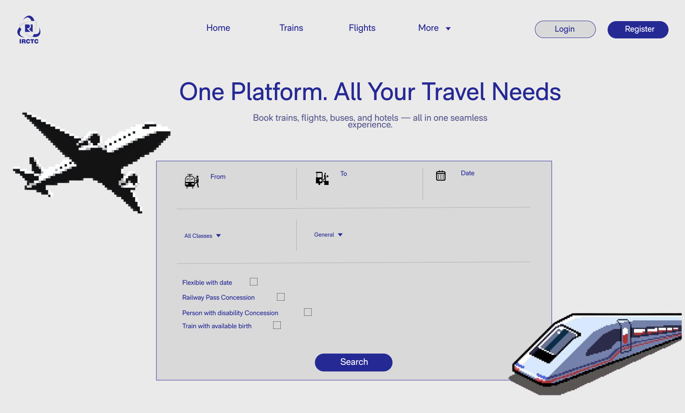
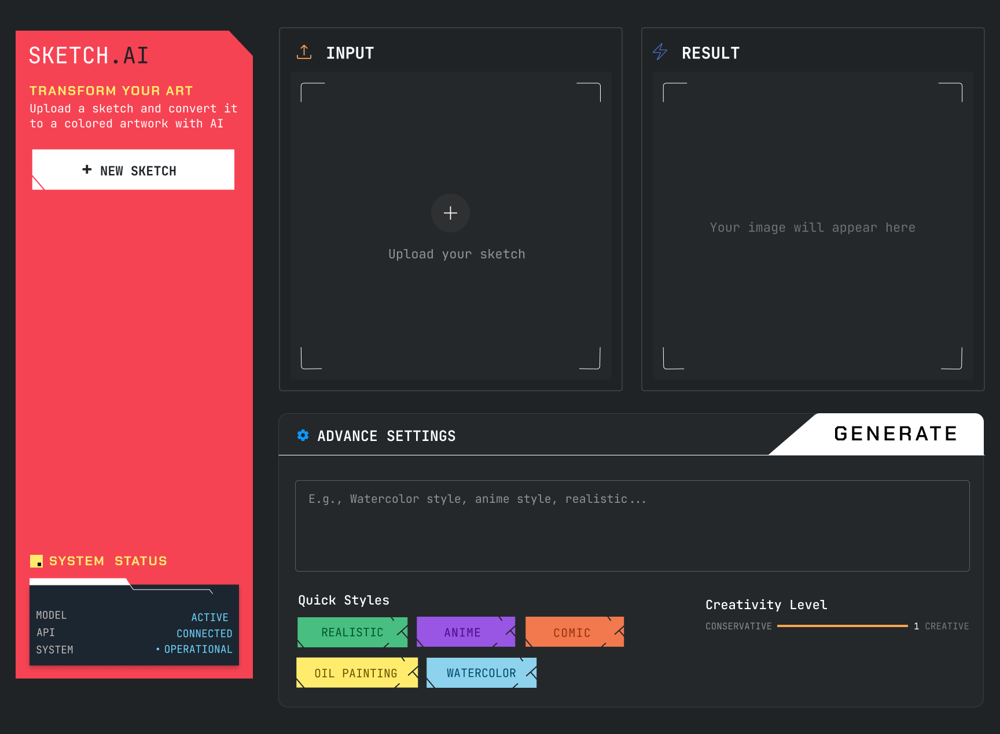

We
Refine
Flaws
Into
Flawless
DS!GN.
Redesigning broken digital experiences to make them faster, cleaner, human.
About Us
Renaissers — a word born from Renaissance, meaning rebirth.
A new gen of creators, rebuilding the web with vision, depth, and intent.
The Renaissers exist to reimagine, rebuild, and revive what the world has given up on.
We blend bold design with sharp vision to create interfaces that are intuitive, fast, and unforgettable.
Because when design just feels right — users don’t just notice.
They remember. They return.
OUR Process
Not every website needs a redesign. But the broken ones? They deserve a revival. Our process is clear! we diagnose the pain, rethink the experience, and rebuild with purpose. From messy layouts to confusing navigation, we fix what’s broken and bring back clarity, style, and seamless performance.
IRCTC REVIVED
Redesigned the chaotic IRCTC homepage into a sleek and breathable experience, replacing the cluttered navbar and overloaded ticket booking section with a clean, minimal layout. Now, users are greeted with a calm, organized interface that makes booking feel effortless rather than overwhelming.
SKETCHAI REVIVED
Transformed the complex world of AI image generation into an approachable, clean interface that welcomes casual creators. By stripping away technical complexity, we created a focused experience where users can simply upload their sketches and bring them to life. The minimalist design puts creativity first, making AI art generation feel as natural as picking up a pencil.
Nominate a Site
or Want a private
Project?
Got a broken website or a bold idea? We might already have the fix — and if not, we’ll build one for you. Let’s connect.